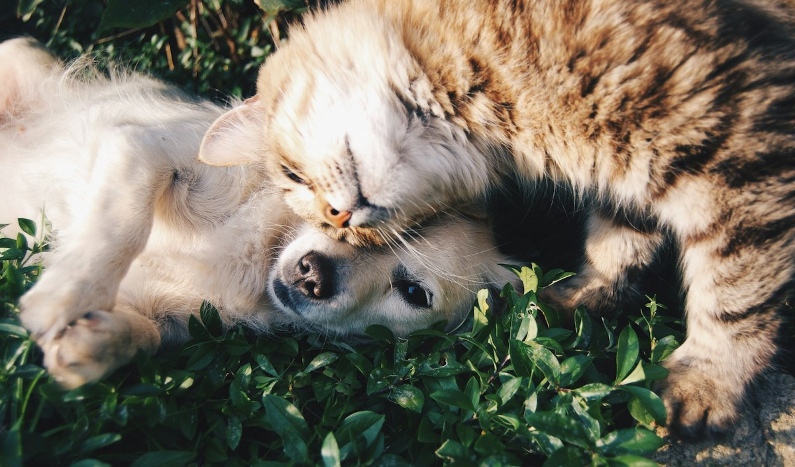
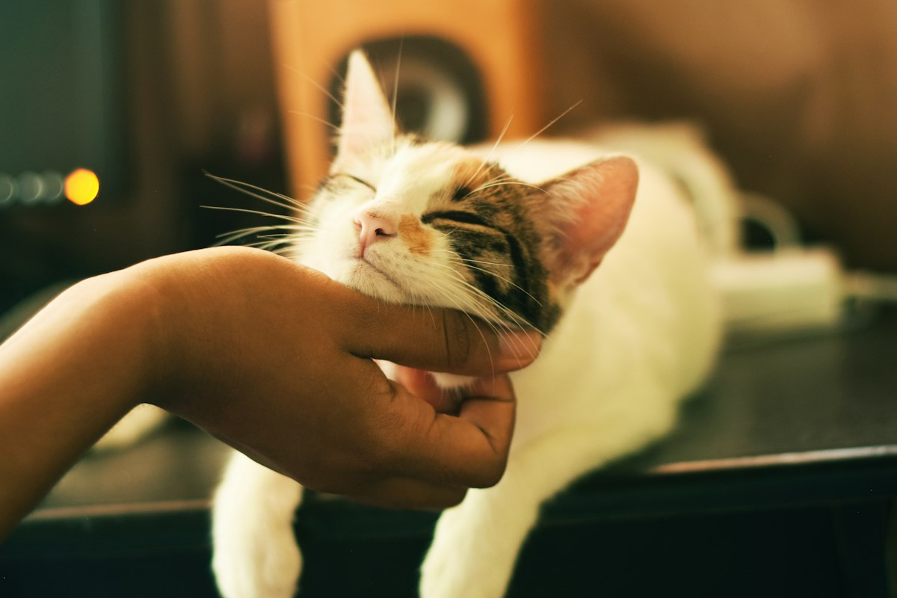
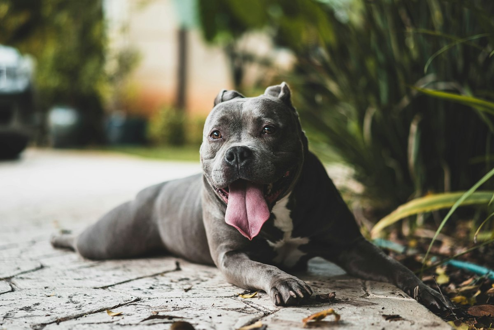
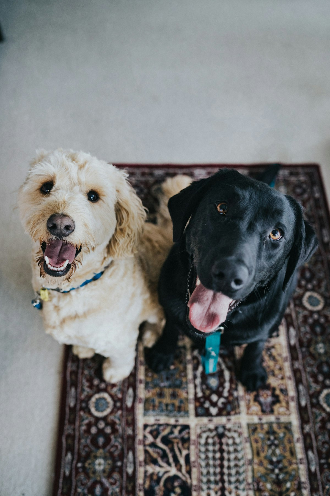
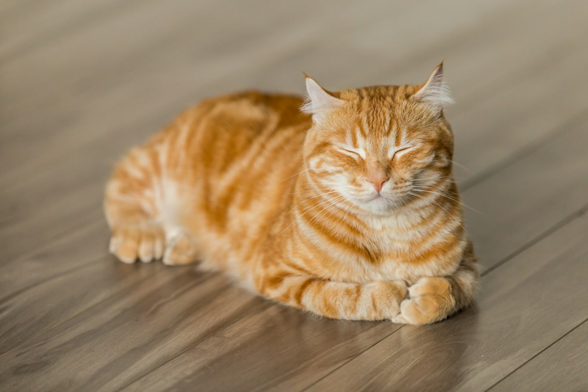

Perros, gatos y exóticos en Cesteros, Chimalhuacán. Abierto todos los días de 11:00 a 20:00.
📞 Llamar 55 2340 0315💬 WhatsAppRevisión completa y diagnóstico.
Esquemas para cachorros, gatitos y adultos.
Aves y especies poco comunes.
Cirugía general, esterilización y ortopedia.
Análisis clínicos y estudios.
Baño y corte para perros y gatos.
Con el Vet. Gerardo al frente, en Divetpet atendemos desde consultas y vacunas hasta cirugía, ortopedia y animales exóticos. Explicamos con paciencia cada procedimiento y su costo.




★★★★★“La atención es maravillosa, siempre hay empatía con la mascota y con los dueños. Tratan de ser lo más claros posibles en los procedimientos y costos.”
— Reseña en Google · 2025
★★★★★“Atendieron con cuidado y esmero a mi ave; es muy complicado encontrar quien atienda exóticos.”
— Reseña en Google · 2025
★★★★★“Los precios son accesibles y los doctores muy profesionales y amables. Mis gatos están sanos y con su esquema de vacunas completo.”
— Reseña en Google · 2025
Abrimos todos los días, de lunes a domingo, de 11:00 a 20:00.
Sí, atendemos aves y otras especies exóticas además de perros y gatos.
Sí, realizamos cirugía general y ortopedia; agenda una valoración previa.
Los miércoles al mediodía suele haber más pacientes; el resto de la semana la espera es menor.
Llámanos o escríbenos por WhatsApp al 55 2340 0315 y te damos el horario disponible.
📍 Pochteca 11, Cesteros, 56366 Chimalhuacán, Méx.
📞 55 2340 0315
🕙 Lunes a domingo, 11:00–20:00